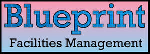

Trade Mark Journal No.2025/042 17 October 2025
UK00004275586 9 October 2025 (37)

- Class 37
- Cleaning services; Housekeeping services [cleaning services]; Janitorial cleaning services; Upholstery cleaning services; Provision of cleaning services; Industrial cleaning services; Domestic cleaning services; Emptying [cleaning] services; Office cleaning services; Restroom cleaning services; Boiler cleaning services; Drain cleaning services; Diaper cleaning services; Tube cleaning services; Escalator cleaning services; Ceiling cleaning services; Valeting services relating to office cleaning; Valeting services relating to household cleaning; Valeting services relating to industrial cleaning; Janitorial services; Laundry services; Services for the dry cleaning of clothing; Disinfection services; Deodorising services; Air duct cleaning services; Range hood cleaning services; Provision of laundry services; Plumbing services; Cleaning by means of sanding (Services for -); Cleaning by water jetting (Services for -); Swimming pool cleaning services; Grouting services; Lubricating services; Plumbing maintenance advisory services; Air conditioning apparatus cleaning services; Cleaning by means of scouring (Services for -); Services for the washing of buildings; Providing information relating to street cleaning services; Lubrication services; Waste disposal [cleaning service]; Providing information relating to window cleaning services; Providing information relating to storage tank cleaning services; Wallpapering services; Vehicle washing services; Tube maintenance services; Cleaning of offices; Dismantling services; Carpentry services; Plumbing repair advisory services; Floor maintenance services; Cleaning equipment hire; Waste disposal for others [cleaning service]; Cleaning of hospitals; Roofing services; Drainage services; Cleaning of upholstery; Advisory services relating to the maintenance of plumbing; Services for the repair of drains; Cleaning equipment (Rental of -); Cleaning of mobile sanitary facilities; Servicing of mains services; Repair services for toys; Plumbing and glazing services; Pressure washing services; Cleaning of schools; Motor land vehicle cleaning services; Advisory services relating to the repair of plumbing; Cleaning of furnishings; Sharpening services; Building maintenance and repair services provided by a handyman; Cleaning of shops; Construction management services; Building project management services; Rental of tools, plant and equipment for construction, demolition, cleaning and maintenance; Provision of laundry facilities; Laundry facilities (Provision of -); Installation, repair and maintenance of cleanroom facilities and equipment; Construction project management services; Maintenance of catering equipment; Provision of self-service laundry facilities; Rental of cleaning equipment; Maintenance of cleaning machines; Installation of storage facilities; Advisory services relating to the maintenance of environmental control systems; Cleaning of industrial premises; Providing information relating to the repair or maintenance of power-driven floor cleaning machines; Contract cleaning of leisure centres; Installation of clean room environmental control systems; Providing washing and drying laundry facilities; Hygienic cleaning [buildings]; Services for the maintenance of strong rooms.
Frank Raymond's Ltd